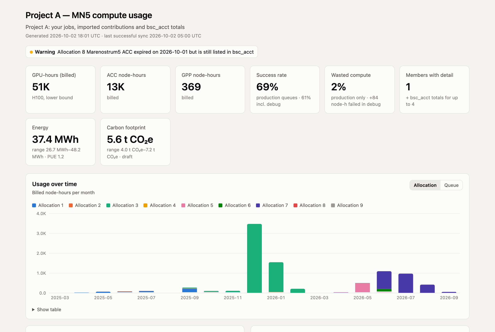
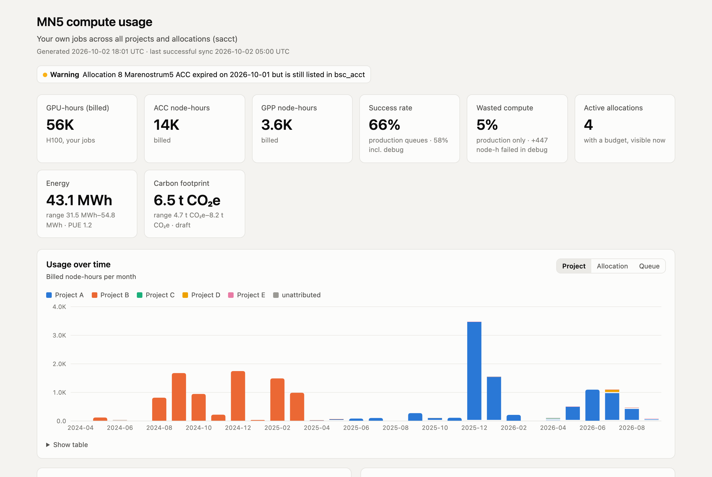

Keep a permanent record of your MareNostrum 5 compute use
mn5track snapshots Slurm and BSC accounting every day into a local database,
maps each job to the scientific project it belongs to, and reports budgets, lifetime
totals, wasted compute, and energy and carbon estimates. That history stays available after
MN5 stops showing it to you.
See it on real data
Both dashboards come from real MN5 usage. Project, allocation and people names are replaced by aliases; hours, dates and outcomes are unchanged. Each page is a single HTML file that works offline. Hover any bar for exact values, or open "Show table" under a chart.

Project view
One project across every allocation it ran on: your jobs, other members' contributions and BSC's own totals, with budget burn-down per allocation.

Personal view
All of one user's jobs, split by project, allocation and queue, with outcomes and the energy and carbon behind them.
Why MN5 "forgets"
MN5 keeps its accounting data, but each user sees only part of it, and part of what they see disappears when they leave an allocation.
sacct: Slurm job accounting
- Shows
- Only your own jobs; everyone else's are hidden
- Visible
- Forever, even after you leave the allocation
bsc_acct: BSC budget accounting
- Shows
- Everyone's usage, the budget and the expiry date, as one running total with no dates
- Visible
- Only while you are in the allocation's Unix group
When you are removed from an allocation, its budget and your colleagues' usage vanish from view. Even while they are visible, you cannot ask what the total was last month. The tracker keeps a dated copy every day, so the last copy becomes the permanent record.
How it works
A daily job on your laptop; MN5 is only ever read, never written.
-
Collect
One ssh session runs
sacct,bsc_acct,sacctmgr,idandbsc_quota. An allowlist rejects anything that is not read-only, so the tracker cannot submit or cancel jobs. -
Keep the raw output
Every output is stored compressed before parsing. If MN5 changes a format, fix the parser and replay the history with
mn5track reparse. -
Store and check
Jobs go into SQLite and are frozen once finished; budget snapshots are append-only. Each sync reconciles your Slurm billing against BSC's totals and flags lost access.
-
Attribute and report
Ordered rules on working directory, job name, account and date map jobs to projects. Reports, dashboards and statements read only the local database.
What you get
Budgets and alerts
Used share, expiry and projected exhaustion per allocation, with alerts for low budget, expiry, lost visibility and stale data.
Lifetime project totals
A project's use across every allocation it touched, stated as a lower bound with its coverage.
Allocation ≠ project
An allocation is who paid; a project is what science it was. Rules keep the two apart,
and explain shows why a job was attributed where it was.
Waste, separated from debugging
Failures in production queues count as wasted compute; failures in debug and interactive queues are shown apart, because they are expected.
Several members, one total
Each member exports aggregated monthly rows with no job names or paths; importing them rebuilds the project total that nobody can see alone.
Statements for papers
A resource-usage paragraph and table for papers, reports and proposals, generated from the same numbers as the dashboard.
Energy and carbon
Estimates follow the Green Algorithms approach (Lannelongue et al., 2021) and complement in-job measurement tools such as CodeCarbon by covering every job, including ones that were never instrumented.
IT energy = measured energy (exclusive CPU-node jobs)
+ other billed node-hours × modelled node power
facility energy = IT energy × PUE
CO₂e = facility energy × grid carbon intensity of the monthMN5 measures energy only on CPU nodes, and only per whole node. GPU-node power is modelled from GPU utilisation scenarios, so results come as a low–central–high range with the measured share stated. Until every parameter has a source, outputs are marked as a draft. The demo's figures use placeholder parameters.
Counting what the budget pays
| Quantity | Definition |
|---|---|
| Billed node-hours | Slurm billing × hours ÷ hardware threads per node (160 on GPU nodes, 224 on CPU nodes). A 1-GPU job is billed a quarter node. |
| GPU-hours | Billed GPU-node hours × 4 (H100) |
| Node-hours | Elapsed time × nodes: what was occupied |
| BSC khours | Thousand physical-core-hours; GPU-node hours = khours × 1000 ÷ 80. Agrees with Slurm billing to about 0.1 %. |
Get started
Needs uv, Python 3.12 or later, and ssh access to an MN5 login node.
git clone https://github.com/amozaffari/energy4mn5_public && cd energy4mn5_public
uv sync
cp config/tracker.example.yaml config/tracker.yaml # your username and ssh hosts
uv run mn5track sync --full # first full history
uv run mn5track status # budgets, expiry, alerts
uv run mn5track dashboard --project <name> # this page's dashboards
uv run mn5track schedule install # daily snapshot on macOS